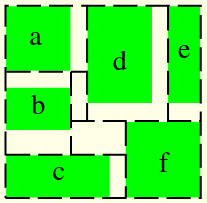
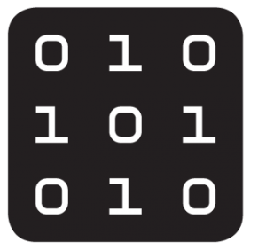

Cheng-Hsiang Chiu
Ph.D. student, Department of ECEUniversity of Wisconsin-Madison, Madison, WI, USA
Office: 3605 Engineering Hall
BS (CCU-EE), MS (NCTU-CM & EPFL-Informatique)
I am a Ph.D. student in the Department of ECE at the University of Wisconsin-Madison, working on an open-source library, Taskflow, and advised by Prof. Tsung-Wei Huang. My current research focuses on high performance, parallel and heterogeneous computing. I used to investigated in varius projects including edge computing, data analysis, privacy protection and streaming system. During my leisure time, I enjoy playing badminton.
Recent Update
Current Project

Taskflow, AsyncTask, Pipeflow, syclFlow
Taskflow helps C++ developers quickly and efficiently write parallel and heterogeneous programs with high performance and simultaneous high productivity. AsyncTask allows users to explore dynamic task graph parallelism in their applications. Pipeflow provides an efficient pipeline scheduling framework. syclFLow allows users to write GPU codes using single source programming model SYCL easily.
Past Projects

VLSI floor planner
A floor planner that maps a 3-D physical finite element model onto a 2-D grid of processing units in a supercomputer.

Energy efficient edge computing in Arctic
Energy efficient edge computing devices reduce power consumption of wildlife classification platform in Arctic tundra.
Data visualization and analysis
Parallel simulations calculate power data, two-dimension materials and soil classification and present analysis with suitable visualizations.
Privacy protection
Technique prevents malicious Apps from profiling users' privacy.
Movie Recommender via Amazon Mechanical Turk
Method alleviates cold start problem in recommender systems.
Vision-based intelligent environment
vision-based security surveillance aims to an intelligent living environment.
Conference Papers
- Cheng-Hsiang Chiu, Chedi Morchdi, Yi Zhou, Boyang Zhang, Che Chang, and Tsung-Wei Huang, "Reinforcement Learning-generated Topological Order for Dynamic Task Graph Scheduling," IEEE High-performance and Extreme Computing Conference (HPEC), 2024
- Cheng-Hsiang Chiu,Chedi Morchdi, Yi Zhou, and Tsung-Wei Huang, "Boosting the Performance of Reinforcement Learning-based Task Scheduling using Offline Inference," IEEE High-performance and Extreme Computing Conference (HPEC), 2024
- Cheng-Hsiang Chiu and Tsung-Wei Huang, "An Experimental Study of Dynamic Task Graph Parallelism for Large-Scale Circuit Analysis Workloads," IEEE Computer Society Annual Symposium on VLSI (ISVLSI), 2024
- Che Chang, Cheng-Hsiang Chiu, Boyang Zhang, and Tsung-Wei Huang, "Incremental Critical Path Generation for Dynamic Graphs," IEEE Computer Society Annual Symposium on VLSI (ISVLSI), 2024
- Tsung-Wei Huang, Boyang Zhang, Dian-Lun Lin, and Cheng-Hsiang Chiu, "Parallel and Heterogeneous Timing Analysis: Partition, Algorithm, and System," ACM International Symposium on Physical Design (ISPD), 2024
- Cheng-Hsiang Chiu, Zhicheng Xiong, Zizheng Guo, Tsung-Wei Huang, and Yibo Lin, "An Efficient Task-parallel Pipeline Programming Framework," ACM International Conference on High-performance Computing in Asia-Pacific Region (HPC Asia), 2024.
- Chedi Morchdi, Cheng-Hsiang Chiu, Yi Zhou, and Tsung-Wei Huang, " A Resource-efficient Task Scheduling System using Reinforcement Learning," IEEE/ACM Asia and South Pacific Design Automation Conference (ASP-DAC), 2024.
- Cheng-Hsiang Chiu, Dian-Lun Lin, and Tsung-Wei Huang, "Programming Dynamic Task Parallelism for Heterogeneous EDA Algorithms," IEEE/ACM International Conference on Computer-aided Design (ICCAD), 2023.
- Cheng-Hsiang Chiu and Tsung-Wei Huang, "Composing Pipeline Parallelism using Control Taskflow Graph," ACM High-Performance Parallel and Distributed Computing (HPDC), 2022.
- Cheng-Hsiang Chiu and Tsung-Wei Huang, "Efficient Timing Propagation with Simultaneous Structural and Pipeline Parallelisms," Design Automation Conference (DAC), 2022.
- Cheng-Hsiang Chiu, Tsung-Wei Huang, Zizheng Guo, and Yibo Lin, "Pipeflow: An Efficient Task- Parallel Pipeline Programming Framework using Modern C++," Arxiv, 2022.
- Cheng-Hsiang Chiu, Dian-Lun Lin, and Tsung-Wei Huang, "An Experimental Study of SYCL Task Graph Parallelism for Large-Scale Machine Learning Workloads," International European Conference on Parallel and Distributed Computing (EURO-PAR), 2021.
- Der-Cherng Liaw, Jing-Hong Lai, Cheng-Hsiang Chiu, and Jia-Hong Liao, "A Wireless Sensor Network Platform for Indoor Surveillance System," International Conference on System Science and Engineering, 2011.
- Der-Cherng Liaw, Yi-Hung Hsieh, Jing-Hong Lai, and Cheng-Hsiang Chiu, "A Network Topology Design for Structural Health Monitoring," Asian Control Conference, 2011.
- Der-Cherng Liaw, Chia-Wei Yeh, Cheng-Hsiang Chiu, Chia-Ming Chang, and Hsiao-Jen Hsieh, "A Load Balancing Scheme for Web Server Design," International Conference on System Science and Engineering, 2011.
- Der-Cherng Liaw, Cheng-Hsiang Chiu, Chia-Wei Yeh, Chia-Ming Chang, and Hsiao-Jen Hsieh, "A Server Load Balancing Design for Peer-To-Peer Network," International Conference on Mechanical Engineering and Technology, 2011.
- Cheng-Hsiang Chiu, Pang-Chan Hung, Jen-Hui Chuang, and Shing-Lu Huang, "Object Tracking under Sensing Lighting Equipments," IEEE Conference on Industrial Electronics and Applications, 2010.
- Yi-Yuan Chen, Yuan-Yao Tu, Cheng-Hsiang Chiu, and Yong-Sheng Chen, "An Embedded System for Vehicle Surrounding Monitoring," IEEE Conference on Power Electronics and Intelligent Transportation System, 2009.
Journal Papers
- Yu-Cheng Chiou, Tuza Adeyemi Olukan, Mariam Ali Almahri, Harry Apostoleris, Cheng- Hsiang Chiu, Chia-Yun Lai, Jin-You Lu, Sergio Santos, Ibraheem Almansouri, and Matteo Chiesa, "Direct Measurement of the Magnitude of van der Waals interaction of Single and Multilayer Graphene," ACS LANGUMIR, 2018
Semester Project Reports
- Cheng-Hsiang Chiu, "Bootstrapping recommender systems with the crowdsourcing II," École Polytechnique Fédérale de Lausanne, 2015
- Cheng-Hsiang Chiu, "Bootstrapping recommender systems with the crowdsourcing," École Polytechnique Fédérale de Lausanne, 2014
Thesis
- Cheng-Hsiang Chiu, "Protection against Data Profiling by Adversarial Cloud Applications," Master Thesis, École Polytechnique Fédérale de Lausanne (EPFL), Switzerland, 2016
- Cheng-Hsiang Chiu, "Process control in Streaming Server," Master Thesis, National Chiao Tung University, Taiwan, 2007